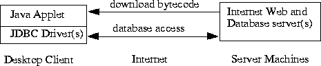
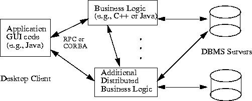

4 Scenarios for use
Before looking at specifics of the JDBC API, an understanding of typical use scenarios is helpful.
There are two common scenarios that must be treated differently for our purposes: applets
and applications.
4.1 Applets
The most publicized use of Java to date is for implementing applets that are downloaded over
the net as parts of web documents. Among these will be database access applets, and these applets
could use JDBC to get to databases.

For example, a user might download a Java applet that displays historical price graphs for a
custom portfolio of stocks. This applet might access a relational database over the Internet to
obtain the historical stock prices.
The most common use of applets may be across untrusted boundaries, e.g. fetching applets
from another company on the Internet. Thus, this scenario might be called the "Internet" scenario.
However, applets might also be downloaded on a local network where client machine
security is still an issue.
Typical applets differ from traditional database applications in a number of ways:
- Untrusted applets are severely constrained in the operations they are allowed to
perform. In particular, they are not allowed any access to local files and they are not
allowed to open network connections to arbitrary hosts.
- Applets on the Internet present new problems with respect to identifying and
connecting to databases.1
- Performance considerations for a database connectivity implementation differ when the
database may be halfway around the world. Database applets on the Internet will
experience quite different network response times than database applications on a local
area network.
4.2 Applications
Java can also be used to build normal applications that run like any shrink-wrapped or custom
application on a client machine. We believe this use of Java will become increasingly common
as better tools become available for Java and as people recognize the improved programming
productivity and other advantages of Java for application development. In this case the Java
code is trusted and is allowed to read and write files, open network connections, etc., just like
any other application code.

Perhaps the most common use of these Java applications will be within a company or on an
"Intranet," so this might be called the Intranet scenario. For example, a company might implement
all of its corporate applications in Java using GUI building tools that generate Java code
for forms based on corporate data schemas. These applications would access corporate database
servers on a local or wide area network. However, Java applications could also access databases
through the Internet.
The Java application and "Intranet" cases differ from applets in a number of ways. For example,
the most natural way to identify a database is typically for the user or application to specify
a database name, e.g. "Customers" or "Personnel". The users will expect the system to locate
the specific machine, DBMS, JDBC driver, and database.
4.3 Other scenarios
There are some other special cases of interest:
- Trusted applets are applets that have convinced the Java virtual machine* that they can
be trusted. They might be trusted because they have been signed with a particular
cryptographic key, or because the user has decided to trust applets from a particular
source. We will treat these applets the same as applications for security purposes, but
they may behave more like applets for other purposes, e.g. locating a database on the
Internet.
- Three-tier access to databases may be used, in contrast to direct client/server access
from Java GUIs to DBMS servers. In this scenario, Java applications make calls to a
"middle tier" of services on the net whose implementations in turn access databases.
These calls might be made through RPC (remote procedure call) or through an ORB
(object request broker), and in either case the middle tier might best be defined using
an object paradigm, e.g. "customer objects" with operations for customer invoicing,
address changes, and other transactions.
We expect that three-tier access will become more common because it is attractive to the MIS
director to explicitly define the legal operations on their corporate data rather than allowing direct
unrestricted updates to the DBMS servers. Also, the three-tier architecture can provide performance
advantages in many cases.

Today, the middle tier is typically implemented in a language such as C or C++. With the introduction
of optimizing compilers translating Java byte codes into efficient machine-specific
code, the middle tier may practically be implemented in Java; Java has many valuable qualities
(robustness, security, multi-threading) for these purposes. JDBC will be of use for this middle
tier.
*As used on this web site, the terms "Java Virtual Machine"
or "JVM" mean a virtual machine for the Java platform.
Contents | Prev | Next
1
For example, you could not depend on your database location or driver being in a .INI file or local registry on the
client's machine, as in ODBC.
jdbc@wombat.eng.sun.com
or
jdbc-odbc@wombat.eng.sun.com
Copyright © 1996, 1997 Sun Microsystems, Inc. All rights reserved.